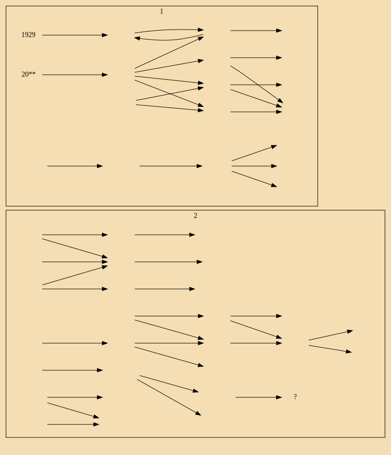

rentier political economics
食利者政治经济学
———奥地利学派的价值和利润理论
[俄] 尼·布哈林
译: 郭连成
商务印书馆
绪论
- 马克思把"揭示现代资本主义社会的经济运动规律"作为自己的目标
- 金融资本的统治只是大大加快推进集中的过程
- 德国的关税保护主义是历史学派的根源
- 只有一个历史,而不是各种经济史,法律史,道德史等等
- 没有抽象认识是不可能的
- 概念本身就是对具体事物的抽象
- 每一门学科都可以利用其他学科的成果
- 否定一般理论恰恰是否定作为一般理论学科的政治经济学
- 商人首先应当积极勤奋,以便为自己谋取财富,之后则决定要成为懒惰和不努力的人
- 无期有息公债和地产是他储蓄唯一合适的地方
- {因此为了阻止食利者阶层的出现的两个方法: \通货膨胀年率(cpi)大于公债年利息\征收房地产税和{房产和金融资产}遗产税}
- {资本积累:积累的资本是什么?产品已经被消费掉了;是社会产品的索取权,是社会财富的占有,是增量财富的分配权,......}
- {金本位时代,作为一般等价物的黄金的增量 和 商品量的极具增长 之间形成矛盾;}
- {纸币时代,急剧增发的货币 和 缓慢增长的社会商品 之间形成矛盾}
- 食利者的生活范围多半是流通领域
- {中间决定两端,流通决定生产消费,关系决定对象,过程决定原因和结果,屁股决定脑袋和手脚,手段决定目的?}
- 重商主义者中理论与实践的联系特别明显,那些接触的思想家又是杰出的实践家
- 托拉斯的组织者和领导者的政治思想体系是战斗的帝国主义,其哲学则是有效的实用主义哲学
- {金融资本并不是当代最新出现的,一战之前就已经出现}
- 奥地利学派成为国际食利资产阶级的科学工具

第一章 边际效用理论和马克思主义理论的方法论基础
- 每个稍些严整的理论都具有某种统一性
- 任何经济理论既然是一种理论,对我们来说都是抽象的
- {从社会的角度看:社会的政治方面,社会的经济性,社会的文化层面,社会的艺术唯度.......}
- {社会是一个抽象的形而上的概念,个人不是吗?}
- {社会本身作为研究对象即意味着,针对的不是其中的一大部分,更不是其中的一小部分}
- {马克思强调客观.是因为主观臆断的广泛存在?}
- "社会产品"主宰者自己的创造者
- 马克思研究的是个人意志结果的规律性
- {群体的力量不是个体的简单相加;在群体之间的竞争中,失败的群体力量小,成功的群体力量大}
- 只有资本主义生产才具有商品拜物教的现象
- 在一切社会状态下,劳动产品都是使用物品
- 资本不时物,而是一定的,社会的,属于一定历史社会形态的生产关系.
- 它体现在一个物上,并赋予这个物以特有的社会性质
- 就像金和银本身不是货币一样
- 庞巴维克的资本定义:作为财富获取手段的产品总和称为资本
- 为什么人们忽略了金融资本的虚拟性:因为资本的价值只关心利润
- 马克思认为现代经济学,只有当研究从流通过程转向生产过程时才开始
- 奥地利学派则认为消费才是最重要的
- 当商品紧缺的时候,生产必然十分重要
- 当生产过剩的时候,消费扩大需求最重要
- 然而,资本是驱动生产的,而不是拉动消费的;消费是资本的湮灭
- 生产创造新的需求{宏观能力究竟有多大?}
- 资产阶级"读死书的学究们";世纪末的资产阶级完全没有能力进行理论思维
第二章 价值理论
- 价值问题一直是政治经济学的基本问题
- 价格的运动使商品供应适合于商品需求
- 利润剩余产品的货币表现
- {三只鸡->四只鸭子->五只鸡;微观的不公平交换}
- 价值是一种交换标准
应当在个人心理现象中寻找社会经济现象的基础
- 现代生产方式的特征是面向市场而不是为了自身消费的生产
- 个性的东西在多大程度上是社会的?
第三章 价值理论 续
- 从消费的观点来认识整个经济过程 Vs 以生产的角度来认识整个经济过程
- 由技术进步导致商品价格跌落(农产品) && 有技术进步造成商品价格高企(苹果手机)
- 边际效用递减是对单个消费者,整个生产者而言的
- 个人的购买欲望与社会的购买欲望
- 人所创造物品的主观性:键盘是用来适应人手的,人手不是用来适应键盘的
- 物品的客观性:qwerty键盘布局广泛使用后;人们被迫习惯这种布局并不合理的键盘
- 在理论上兜圈子:"价格形成因素"要通过价格来解释
第四章 利润理论
- 早先李嘉图认为是政治经济学的最重要问题的分配问题,无疑具有头等重要的的意义
- 价值理论分析的是商品生产的基本和保罗万象的现象
- 分配理论分析的是资本主义世界的对抗性的社会现象
- 一部分经济学家寻找在人类生产经营的"永恒"和"自然"条件下所谓的"非劳动收入"的起源,另一部分经济学家则相反,认为非劳动收入是特定历史关系的结果
- 分配形式对生产形式的依赖关系
- 马克思:像资本一样,雇佣劳动和土地所有权也是历史规定的社会形式
- 把利润,地租和工资看作是逻辑范畴而不是历史范畴的经济学家
- {核心化的大资产阶级,以及为大资服务的,为满足大资的多样化的需求而存在的中等资产阶级,因此中资必然散乱而无法统一;小资产阶级的无产阶级则站在了其对立面;阶级斗争的广泛存在的基础:利益分配的不均衡}
- {对利润的争夺已经由个人竞争,企业竞争,产业竞争(英荷),发展到国家资本竞争(1929),正是因为竞争的规模不断扩大,随着这种扩大而带来思想观念的转变,因为竞争规模的要求,因而集体主义特征越来越多,个人主义特征越来越少;竞争的经济基础必然产生竞争性的上层建筑;进而发展出竞争性的社会制度和社会文化}
- 事情的实质是工人失去了独立生产的可能性
- 利润的社會阶级本质
帕鲁斯:如果有人以暴力相威胁,抢走另一个人的钱, 这是什么行为?抢劫?不,庞巴维克应该说这是正常的现货交易.强盗认为货币的现实价值要比无上幸福的未来价值好;而被抢劫者则认为保全性命的未来要比自己货币的现实意义更加重要
第五章 利润理论 续
- 经济有自己的逻辑
- 基本价值和企业性的业务是以最严格的核算为基础进行的
- 任何一位好主任...关心未来的必要性在这里特别大
- 工人除了出卖自己的劳动力,别无可能获取其他财货{资产阶级的成员有限性}
- {认识主观与客观的边界;主观的就留给主观;客观的就留给客观}
- 经院式的论据;该学派认为消费性财货是第一位的
- 工人不存在独立生产的可能性
- 要么与实际想矛盾,要么内部存在矛盾
- 用各种各样的术语和经院式的机智巧妙的论证方法,千方百计的模糊利润的起源
- {人的需求是无限的,但因为财产有限的原因所以人的有效需求(真正的购买能力)是有限的}
- 资本的一种强大的社会力量,建筑在作为阶级的资本家对生产资料的垄断和迫使工人让出自己的一部分劳动产品的垄断基础上
- 社会不平等和对抗性社会构成的存在,是现代经济生活的基本事实
- 如果不分析这种经济结构,任何理论都注定是徒劳无益的
然而掩盖阶级对抗的意愿是如此强烈,以至现代资产阶级科学宁愿捏造出许多完全空洞的"解释";将一个空洞的论据缠绕在另一个论据上;以建立一整套"体系".来再现被久久遗忘的"理论".并写出很厚的一大堆书
结束语
- 价值理论是利润理论的基础__庞
- 理由:价值理论是证明现代社会制度正确的一种理论方法
- 马克思主义的观点:交换本身是产品分配的历史暂时形式之一
- 人类社会的发展只有在社会生产力即社会劳动生产率提高的情况下才是可能的.
- 正是价格的波动在社会商品经济中引起生产力的再分配
- 无产阶级思想体系的发展过程是斗争的过程
- 对资产阶级经济学的批判有助于发展无产阶级自己的经济科学
- 那些勇敢的直面行将到来的暴风骤雨的所有人,都会聚集在马克思主义的红旗下
------------郭连成 2001.8.11---------
其他内容
本书别名: 对庞巴维克的经济理论批判
杜润生:我们欠农民的太多,不能给农村老人们平等国民待遇,天理难容
道德具有阶级性: 斯诺登;爱泼斯坦;另jihua's son.....
2019年8月2日，中导条约全面失效。导弹军备竞赛开始 ;trump组建太空军;印度试射反卫星导弹
对生命的真正威胁是冲突,不是管制: 巴西的监狱
Between Two World Wars?
﹝奥地利﹞奥托·鲍威尔（Otto Bauer）
1936
不敷温饱的工资，
12小时甚至14小时的工作时间，
大批的童工和女工，
工人在生病、失业和年老时没有任何保障，
禁止组织工会和罢工，
工人对工厂企业主的专制无能为力，
工人在国家中没有任何权利，
住宅和卫生条件十分恶劣，文盲和酗酒，这就是当时工人阶级的状况
- 结果只是国家政权从土地贵族手中交到金融贵族手中
- 资产阶级知识分子看到了无产阶级可怕的大饥荒，看到了小市民和农民的无产阶级化
- 资产阶级革命只是用资本主义的剥削和奴役来取代封建主义的剥削和奴役
- 他们用社会主义社会制度的理想景象与他们所生活的资本主义现实的野蛮状态相对抗
- 当时的社会主义相信仅仅通过对社会理智的呼吁或者通过小规模试验的宣传作用能够把人类带向一个结束所有阶级斗争的社会制度
- 资产阶级革命的结果并不是他们所渴望的理智的王国，而是资本的统治
- 哲学只是阶级斗争的映象，只是斗争着的阶级的武器
- 无产阶级斗争的目的不是别的，只为实现它的直接利益：为了多得一小块面包，为了多一点健康，为了多一点自由
- 战前的最后几年，物价上涨降低了工人的实际工资
- 现代武器技术的发展加强了国家政权，使任何暴力起义变得毫无希望。
- 革命仅仅是对未来的希望
- 只有当部分国家暴力机关和国家军队在内战中拒绝对无产阶级开战，或干脆站到无产阶级一边，无产阶级才能在内战中取胜
- 欧洲大陆的社会主义实际上也跟英国一样变成改良主义的了
- 事实上改良主义只有在这样的国家才能发展起来，即享有民主权利的工人阶级能够利用相对有利的经济局面，在工会和政治斗争中取得显著的经济和社会成果
- 只能用非法的、革命的手段进行斗争。
- 他们的所有合法的斗争手段都被剥夺了，只能用革命的手段继续斗争
- 无产阶级有很大的可能性在资本主义社会内部运用法律手段成功地维护自己的利益
- 社会主义在西欧和中欧资产阶级革命结束后变成改良主义的了
- 列宁写道：社会民主意识“只能从外面灌输进去
- 社会主义学说则是从有产阶级的有教养的人即知识分子创造的哲学理论，历史理论和经济的理论中发展起来的
- 恩格斯的提醒，要去“研究这次革命必然爆发而又必然失败的原因。这些原因不应该从一些领袖的偶然的动机、优点、缺点、错误或变节中寻找，而应该从每个经历了动荡的国家的总的社会状况和生活条件中寻找
- 在俄国,无产阶级能够依靠革命的农民，而在德国，资产阶级的复辟却在农民那里取得支持。
- 1848年以后，总是当战场上的失败使军纪松懈、统治阶级用来镇压人民的暴力机构瓦解时，人民革命才能发生和取胜。
- 学校教育的普及化和民主才使各国人民的心中充满了民族意识
希特勒德国给全世界上演了一出可怕的戏：一个几十年来一直享受着自由权利、行使着民主选举权的民族，一个有着规模最大、历史最悠久的社会主义群众组织的国家，一个工人群众享受着最高度发展的社会主义教育的国家，在怎样忍受一种专政
- 虽然人们知道，繁荣之后危机会再次到来，但是人们根据类推法设想这些危机会像战前危机一样是相对轻微和短暂的
- 危机没有首先引起无产阶级新的革命进攻，反而招致了法西斯主义的反革命进攻
- 社会民主党人和共产党人为了工人阶级的领导权问题而展开的激烈竞争斗争毁掉了阶级团结的感情
- 传统、意识形态和言语并不能像具体的历史和社会状况那样决定群众在社会发生巨大变化时刻的行为和重大历史事件的过程
- 预先防止国家权力为法西斯主义服务
- 英国工党是改良主义的最纯粹的体现
- 目标明确的社会主义者认为：资本主义社会制度是不会通过从一种改良到另一种改良的逐步改造而被战胜的，社会主义社会制度只有通过革命的爆破才能取胜
- 资本主义社会制度只能由战斗的工人阶级去战胜
- 只有在战争过程中，只有在战争的苦难和牺牲日益严重的时候，群众才会逐渐产生敌视战争的情绪
- 没有一个人比列宁更加充分地认识群众情绪的发展：在战争开始时充满爱国主义激情，后来对战争的反抗逐渐加强，最后发展到用革命反对进行战争的政权。
- 无论如何，战争开始时工人阶级中只会有少数人听信革命马克思主义的言论，但是，在战争的进程中听信的群众会越来越广泛
- 资产阶级想打败德国，是为了瓜分第三帝国，奴役和剥削德意志民族